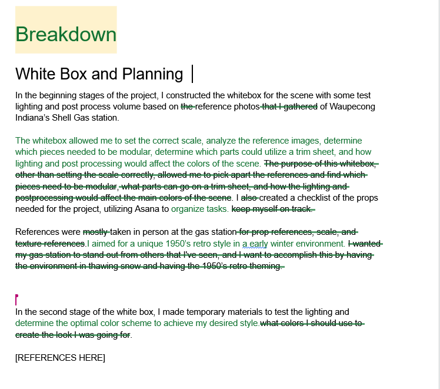
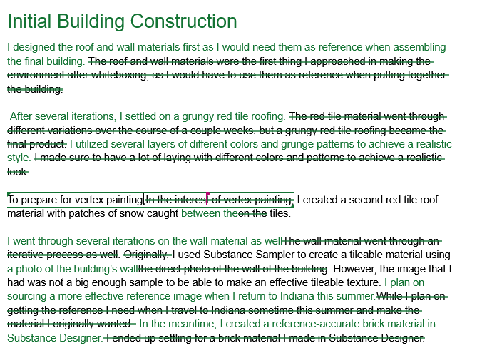
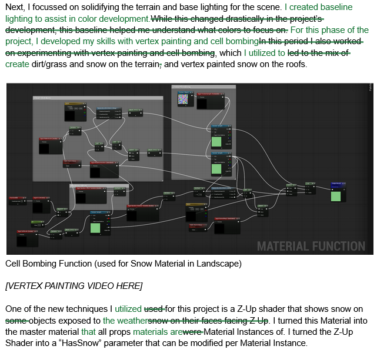
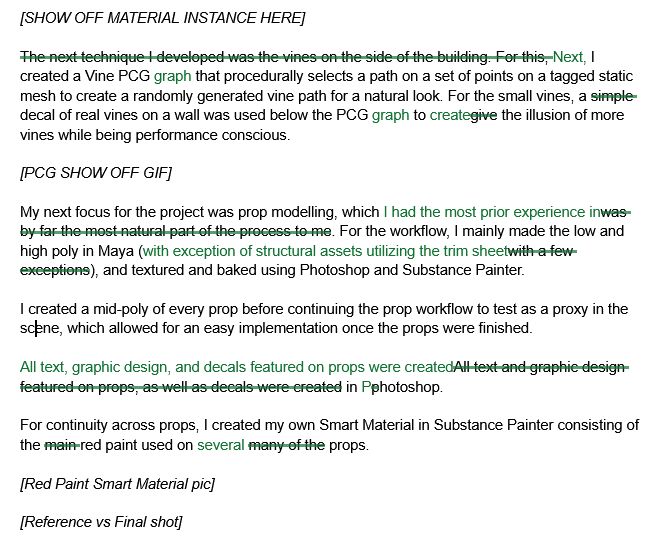

I was contracted by an experienced 3D artist to edit and refine technical descriptions of the 3D modeling workflow. Edits were made focusing on reducing word count, improving consistency, conveying information effectively, preserving technical details, and overall refinement of voice and style.
I utilized Google Docs' suggestion feature to propose edits which could be approved or denied by subject matter experts in real time.
Throughout the process, I consulted with a subject matter expert to determine the best way to communicate complex technical information. I additionally conducted research in software documentation when encountering unclear terminology.
The edits were then reviewed by a subject matter expert, revised based on feedback, and implemented by the portfolio site owner.
View Final ProductEdits



